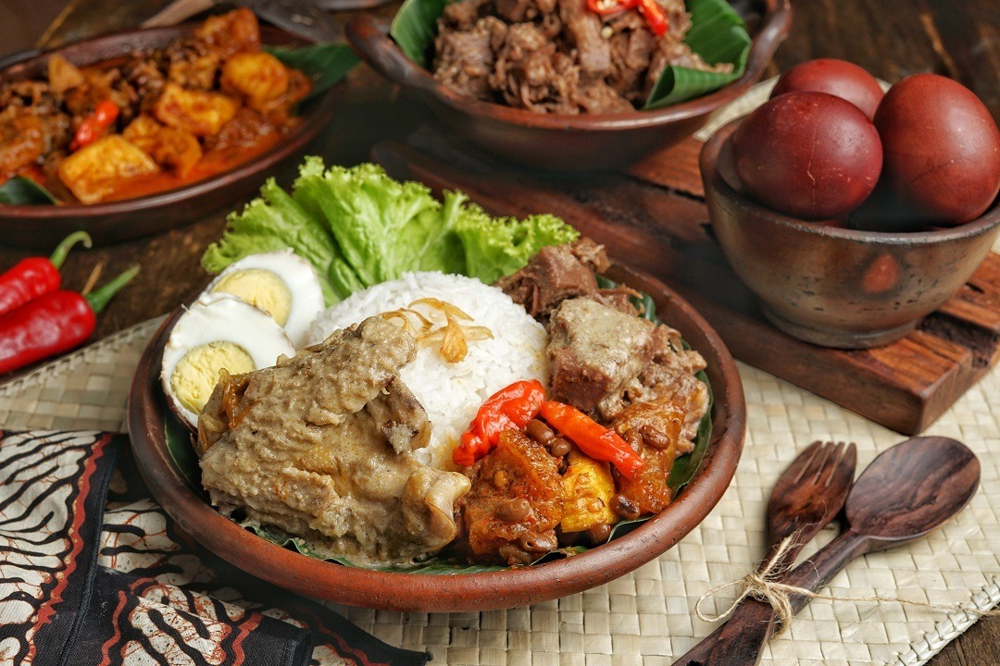

Sejarah
Awal sejarah Yogyakarta bermula dari Kerajaan Mataram yang didirikan
pada abad ke-8 Masehi. Mataram berkembang menjadi salah satu
kerajaan terkuat di Pulau Jawa. Pada abad ke-18, Mataram terpecah
menjadi dua kerajaan yang terpisah, yaitu Kesultanan Yogyakarta dan
Kesultanan Surakarta. Kesultanan Yogyakarta didirikan oleh Sultan
Hamengkubuwono I pada tahun 1755.
Yogyakarta adalah pusat budaya dan sejarah di Indonesia. Kota ini
merupakan bekas ibu kota Kerajaan Mataram, dan warisan sejarahnya
dapat ditemukan di berbagai tempat, termasuk Keraton Yogyakarta
(istana kerajaan), yang merupakan salah satu daya tarik utama.
Seni Budaya
Yogyakarta dikenal karena seni dan budayanya yang kaya. Seni wayang
kulit, tari Jawa, dan musik gamelan adalah bagian integral dari
kehidupan kota ini. Ada banyak pertunjukan seni yang dapat dinikmati
oleh wisatawan. Seni budaya Yogyakarta adalah warisan budaya yang
sangat kaya dan beragam, mencerminkan identitas dan tradisi
masyarakat Jawa.
Wayang Kulit
Wayang kulit adalah bentuk teater kulit tradisional Jawa yang
menggunakan boneka kulit yang diproyeksikan di layar putih.
Pertunjukan wayang kulit sering menggambarkan kisah epik dari
Mahabharata atau Ramayana dan disertai dengan gamelan, alat musik
tradisional Jawa. Wayang kulit adalah seni pertunjukan yang
penting dalam budaya Jawa dan sering digunakan untuk menyampaikan
pesan moral dan budaya.
Tarian Jawa

Tari klasik Jawa, seperti tari Ramayana, tari Srimpi, dan tari
Legong, adalah bagian penting dari seni pertunjukan tradisional
Yogyakarta. Tarian-tarian ini menggabungkan gerakan yang indah dan
simbolisme yang dalam, sering kali menggambarkan cerita-cerita
klasik atau mitologi Hindu.
Batik
Batik adalah teknik pewarnaan kain khas Indonesia yang melibatkan
penggunaan lilin panas untuk mencegah pewarnaan pada bagian-bagian
tertentu dari kain. Yogyakarta dikenal sebagai salah satu pusat
produksi batik terbaik di Indonesia. Batik Yogyakarta sering
memiliki desain yang rumit dan berwarna-warni.
Wisata
Sekitar Yogyakarta terdapat banyak destinasi wisata alam yang
menarik. Gunung Merapi, salah satu gunung berapi aktif paling
terkenal di Indonesia, dapat dijelajahi melalui trekking. Di sekitar
kota, terdapat juga goa-goa menakjubkan seperti Goa Jomblang yang
dapat dieksplorasi.
Gunung Merapi
Gunung Merapi terletak di Pulau Jawa, Indonesia, sekitar 28
kilometer sebelah utara Yogyakarta dan 40 kilometer sebelah
selatan Kota Semarang. Gunung ini merupakan bagian dari Cincin Api
Pasifik, yang merupakan zona seismik aktif di dunia. Nama "Merapi"
dalam bahasa Jawa berarti "Gunung Api." Nama ini merujuk pada
aktivitas vulkanik gunung ini yang sangat sering meletus.
Meskipun berbahaya, Merapi juga menawarkan pemandangan alam yang
spektakuler. Di sekitar gunung ini, terdapat lereng-lereng yang
subur, sawah-sawah, dan hutan tropis yang indah.
Goa Jomblang
Goa Jomblang terletak di Kecamatan Semanu, Kabupaten Gunung Kidul,
sekitar 50 kilometer sebelah selatan Yogyakarta. Goa ini berada di
tengah kawasan karst yang kaya akan formasi batu kapur yang indah.
Salah satu daya tarik utama Goa Jomblang adalah cahaya alami yang
masuk melalui lubang goa di atas. Ini menciptakan efek visual yang
spektakuler saat cahaya matahari menembus ke dalam goa dan
memantul di permukaan tanah di dalamnya. Formasi batu kapur yang
tinggi dan stalaktit yang menjuntai menambah keindahan goa ini.
Candi Prambanan
Candi Prambanan adalah sebuah kompleks candi Hindu yang luar biasa
yang terletak di Yogyakarta, Indonesia. Ini adalah salah satu
situs warisan dunia UNESCO yang paling terkenal di Indonesia dan
merupakan salah satu contoh paling indah dari arsitektur candi
Hindu di Asia Tenggara.
Candi Prambanan terletak di Klaten, Jawa Tengah, sekitar 17
kilometer timur laut Kota Yogyakarta. Candi ini mudah diakses dari
kota-kota terdekat dan menjadi tujuan wisata yang populer di
wilayah tersebut.
Candi Prambanan dibangun pada abad ke-9 Masehi selama pemerintahan
Dinasti Mataram. Ini adalah kompleks candi Hindu terbesar yang
pernah dibangun di Indonesia dan menjadi pusat keagamaan dan
budaya pada masanya.
Kuliner
Kuliner Yogyakarta adalah sebuah perjalanan tak terlupakan melalui
cita rasa yang memikat, aroma yang menggoda, dan tradisi kuliner
yang kaya. Kota ini tidak hanya memiliki keindahan alam dan warisan
budaya yang luar biasa, tetapi juga menyuguhkan hidangan-hidangan
yang lezat yang mencerminkan kekayaan budaya Jawa.
Gudeg

Gudeg adalah hidangan khas Yogyakarta yang terbuat dari nangka
muda yang dimasak dengan santan, gula merah, daun salam, dan
rempah-rempah. Biasanya disajikan dengan ayam, telur, dan sambal
krecek (kulit sapi yang dimasak hingga renyah). Gudeg memiliki
rasa manis yang unik dan tekstur yang lembut.
Bakpia
Bakpia adalah kue khas Yogyakarta berisi pasta kacang hijau, keju,
atau cokelat. Makanan ringan ini memiliki lapisan kulit yang
lembut dan isian yang manis.
Wedang Uwuh
Wedang Uwuh adalah minuman tradisional Jawa yang berasal dari
Yogyakarta dan Jawa Tengah, Indonesia. Minuman ini dikenal dengan
rasa harum dan hangatnya, dan biasanya disajikan dalam keadaan
panas. Nama "Wedang Uwuh" sendiri berasal dari bahasa Jawa, di
mana "wedang" berarti minuman atau ramuan, dan "uwuh" berarti
rempah-rempah atau daun-daunan.